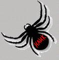

But I'm not doing anything with it!
As I said, I'm not doing anything with it now. I might later. I might not.
You can check back here from time to time if you like.

RETURN
hank@hank.com
-->
 hank@hank.com
-->
hank@hank.com
-->